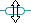
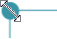
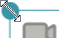
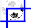

Using the Canvas Tool
This Help topic describes the steps you might do to add or edit with elements from the Canvas Tool. Depending on the page, these elements can be speech bubbles, captions, text boxes, an image or a video.
-
Click the
 Canvas Tool tab in the tool box.
Canvas Tool tab in the tool box. -
In the Pages pane, click an inside page that has an image.
-
If a page has a text footer over the image, you can type or paste text in that text box.
-
To add a new element to a page, click and drag it from the Canvas Tool to the desired location on the image.
-
To duplicate an existing canvas element, press the Alt key and then click the element you want to duplicate.
Now, when you click the element you added or duplicated, a toolbar appears. It shows a set of options, such as . The options depend on the kind of element.
The more button ( ) opens a list with these same opens and more that you can use.
) opens a list with these same opens and more that you can use.
You can do any of these things:
-
For a bubble, text block or caption box:
Click (Format text) to open and use the Format dialog box.
Click Copy text to copy selected text to your clipboard.
Click Paste text if you already copied text to your computer clipboard.
Click Auto height to select () or clear this option. If you cleared this option, you can manually change the height (

).Click Add child bubble to add one.
Click Duplicate to make a copy of the bubble, text block or caption box.
Click Delete to delete the current bubble, text block or caption box.
-
For an image, do any of these steps:
Click Choose image from your computer and then choose the desired image.
Click Paste image if you already copied an image to your computer clipboard.
Click Copy image to copy the current image to your clipboard.
Click Set image information to open and use the Copyright and License dialog box.
If the image is locked, you can only view the information.
Click Expand image to fill space to maximize the use of the available space.
Click Reset image to reset the size after you cropped the image to be smaller.
Click Paste Hyperlink or paste a hyperlink from your clipboard.
Click Duplicate to make a copy of the image.
Click Delete.
-
For a video, do any of these steps:
Click Choose video from your computer and then choose the desired video.
Click Record yourself to use the Sign Language Tool to make a video.
Click Play Earlier or Play Later to move the focus to another video if you have two or more videos.
Click Duplicate to make a copy of the video.
Click Delete to delete the current video.
-
Move an canvas element:
Click and drag it to the desired position.
-
Resize an canvas element:
Click it and then click and drag one of its ends. Examples:
 (speech bubble),
(speech bubble),  ( text block),
( text block), (caption),
(caption),

(image) or
(video).-
Crop an element (without changing the image itself)

-
Align a tail:
Click the tail. Then, click and drag one or more move symbols ( or ) until the tail points to the desired location and has the desired length and curve.
-
Click a bubble, text block, caption box, or image and then use any of these tool box controls, if they are available:
-
Click the Style control if you want to change the shape of the current element.
For example, the Ellipse style elongates the bubble compared to Speech style. Or, you can change the type, such as to change a bubble to be a text box or caption.
-
Select () or clear () Show Tail to show or hide a tail.
-
Select () or clear () Rounded Corners to have round or square corners the current caption box.
-
Click the Outer Outline Color down arrow () and then click a color or None.
-
Click Add Child Bubble and then type words in it.
-
Use the Talking Book Tool if you will record the book.
Tip
-
 (Crop) does not change the actual image, but only changed what you see. This is different from the Crop
(Crop) does not change the actual image, but only changed what you see. This is different from the Crop 
feature in the Image Toolbox. -
Some Canvas Tool features work best when zoom is set to 100%.
-
To see what will be published, click anywhere outside of the page. This hides the move symbols, cogged gear and so on.